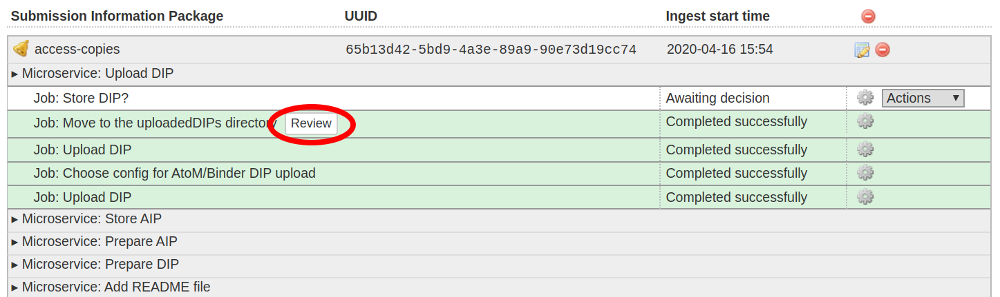
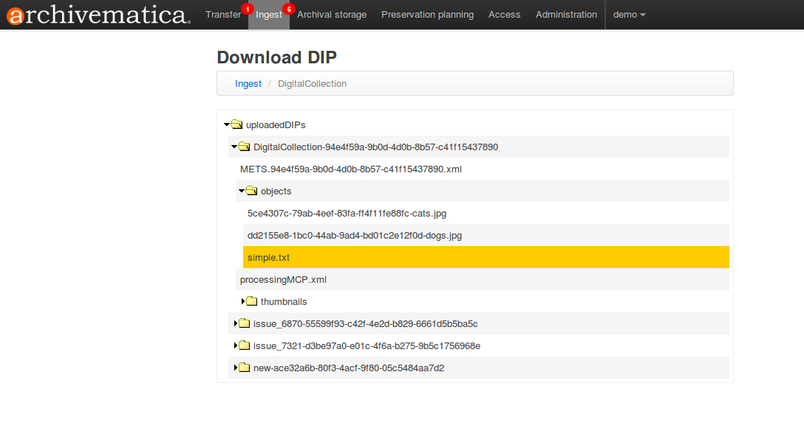

CONTENTdm¶
Archivematicaは、CONTENTdmにアップロードするDIPSを準備できます。Archivematicaバージョン1.4では、CONTENTdmのインストール時の設定は不要です。ArchivematicaがDIPを作成し、DashboardまたはSFTPでArchivematicaがインストールされているサーバーにダウンロードできます。
Archivematicaバージョン1.4では、CONTENTdmへの直接アップロードができなくなりました。以下のプロセスは、 CONTENTdm Project Client を使用してDIPをCONTENTdmにアップロードすることを前提としています。
この処理中にエラーが発生した場合は、 エラー処理 を参照してください。
このページ上
CONTENTdmへの転送準備¶
単一のシンプルオブジェクトまたは複合オブジェクト、または複数のシンプルオブジェクトまたは複合オブジェクトのいずれに対しても、これらの手順に従うことができることに注意してください。
転送の準備
シンプルなオブジェクトの転送の場合：
転送に使いたいディレクトリの中に、2つのサブディレクトリ：
metadataとobjectsを作ります。objects内に、転送したいデジタルオブジェクトを置きます。metadataの中に、metadata.csvというファイルを置きます。以下の準備手順を参照してください。
例：
/transferName
/objects
file1.tif
file2.tif
etc
/metadata
metadata.csv
複合オブジェクトの転送の場合：
転送に使いたいディレクトリの中に、2つのサブディレクトリ：
metadataとobjectsを作ります。objects内に、各複合オブジェクトに対応するディレクトリを作成または配列します。これらのディレクトリの中にデジタルオブジェクトを配列します。メタデータの中に、
metadata.csvというファイルを置きます。以下の準備手順を参照してください。
例：
/transferName
/objects
/directoryOne
file1.tif
file2.tif
etc
/directoryTwo
file3.tif
file4.tif
etc
/metadata
metadata.csv
metadata.csvの準備
metadata.csvの最初のカラムは、filenameでなければなりません。内容は、オブジェクトへのパスかディレクトリになります。単純な転送の場合：
objects/filename.tif
複合転送の場合：
objects/directoryName
または、オブジェクトレベルのメタデータを含む複合転送の場合
objects/directoryName/filename.tif
metadata.csvにDublin Coreフィールドと非Dublin Coreフィールドの両方がある場合、Archivematicaはmetadata.csvファイル内の"custom" （non-Dublin Core）フィールド名を検索し、それらのフィールドに基づいてタブ区切りファイルを作成します。これにより、オペレータは、CONTENTdmコレクションに表示されているフィールド名をそのまま使用でき、Project Clientでのフィールドマッチングが容易になります。また、Dublin Core以外のフィールドは、CONTENTdmコレクションと同じ順序で入力することが推奨されます。ただし、metadata.csvに のみ Dublin Coreネームスペースのフィールドが含まれている場合、Archivematicaはこれらのフィールド名を使用して、dcネームスペースを取り除いたタブ区切りファイルを作成します。例えば、 dc.title は、 title になります。
metadata.csvファイルの作成と転送に関する詳細は、 メタデータのインポート を参照してください。
ファイルの順序の制御¶
現在、タブ区切りファイルにリストされたファイルやディレクトリの順序を制御する唯一の方法は、それらがアルファベット順であることを確認することです。ソート方法は、 ASCII 文字（数字、大文字、アンダースコア、小文字など）に基づいています。
ファイル順序を制御する他の方法は、将来のリリースで実装される可能性があります。issue： 8448 を参照してください。
CONTENTdmのDIPを作成¶
重要
CONTENTdmターゲットコレクションに"AIP UUIDというフィールドと"File UUID"というフィールドがあることを確認してください。Archivematicaが作成するタブファイルには、この2つのフィールドが入力されます。
Archivematicaダッシュボードの「Upload DIP」で、ドロップダウンメニューから「Upload DIP to CONTENTdm」というアクションを選択します。
Archivematicaは、正規化または 手動で正規化した アクセスオブジェクトと、Project Clientで使用するタブ区切りファイルで構成されるDIPを作成します。
ダッシュボードでDIPをレビューし、個々のDIPオブジェクトやタブファイルをダウンロードするには、"review"をクリックします：
{kind=link}

次の画面では、アップロードされたDIPディレクトリが表示され、オペレータは、必要なDIPオブジェクトを検索できます。CONTENTdmタブファイルは、DIPオブジェクトと同じディレクトリにあります。
{kind=link}

デフォルトでは、DIPは /var/archivematica/sharedDirectory/watchedDirectories/uploadedDIPs/ に保存されます。この場所からSFTPクライアント経由で取得することも、ウェブブラウザ経由で個々のオブジェクトをダウンロードすることもできます。
Tip
CONTENTdm Project Clientでの作業が完了し、デジタルオブジェクトがアップロードされたら、""uploadedDIPsディレクトリをクリーンアップして、サービス上のスペースを節約し、ダウンロードDIPページを管理しやすくできます。これは、 [管理]タブの[処理ストレージ使用状況] から実行できます。